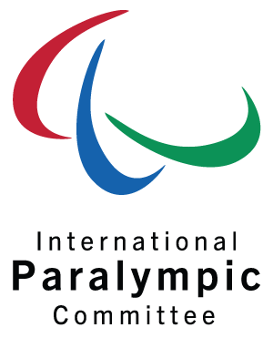

“La única discapacidad en la vida es una mala actitud”
Scope
Es una organización benéfica de igualdad y discapacidad ubicada en
Wales,
Inglaterra dedicada a crear una sociedad más justa e igualitaria.

Paralympic
Es el sitio oficial del Comité Internacional de Paralímpicos (IPC). El
IPC es
un poderoso
defensor de la inclusión social y su sitio web es el testamento de eso.
KidzWish
Es una organización que proporciona terapias, servicios de apoyo y una
fiesta
anual de Navidad
para niños con desventajas o discapacidades.
SSE Energy
Los diseñadores se esforzaron y caminaron una milla adicional para
asegurar
que el sitio sea
accesible para los usuarios con discapacidades visuales y auditivas.
BBC iPlayer
El sitio web es muy fácil de navegar y compatible con tecnología de
asistencia. Puedes moverte
por la página al hacer clic en el botón Tab.
NSW Government
Está perfectamente diseñado para hacer fácil que los residentes de
todos los
contextos y
habilidades puedan usarlo.
GOV.UK
Es el centro para todas las páginas web del gobierno de Inglaterra.
Puede ser
usado para acceder
a todo, desde información sobre beneficios y ayuda por discapacidades para visas y
soporte
de
inmigración.
Manual de Conducción
Ayuda a facilitar la comprensión del Reglamento General de Circulación a las personas sordas, que
pueden acceder a todo el contenido en la página web
Cocemfe
La página web de COCEMFE cumple con la normativa de accesibilidad y es un espacio «social e
interactivo»
Internet un uso responsable
Está pensado para trabajarse en el aula y en el hogar, «favorecer un uso adecuado de Internet y
las redes sociales entre niñas y niños sordos»
No mas abuso
Ha sido diseñado por un grupo de personas con discapacidad intelectual, que ha contado con el
apoyo de psicólogos y fuerzas de seguridad para obtener un recurso útil y adecuado para sus
capacidades
Indra
El proyecto Savia cuenta con interfaces y contenidos configurables y adaptables a las personas
con autismo y otras discapacidades intelectuales
Estas herramientas móviles te ayudaran en el día a día
Dejará de preocuparse de los problemas diarios a los que tienen que hacer
frente y poder, en cierto modo, tener una vida más cómoda
BRAILLIAC: BRAILLE TUTOR
Destinada a personas con discapacidad visual, es una aplicación que tiene la finalidad de facilitar el
aprendizaje de lectura y escritura táctil para las personas invidentes.
TUR4ALL
Es un buscador que muestra establecimientos y actividades con información sobre la accesibilidad física, visual, auditiva, cognitiva y otro tipo de necesidades que pueden tener los viajeros.
IDENTIFI
Esta aplicación permite a las personas invidentes obtener descripciones mediante voz de los objetos solo enfocándolos con la cámara del teléfono móvil.
DÍA A DÍA
Esta aplicación está diseñada especialmente para personas con autismo o problemas de comunicación. Asimismo, permite llevar un seguimiento de las tareas diarias de forma fácil e intuitiva.
DILO EN SEÑAS
Está creada no sólo para las personas con discapacidad auditiva sino también para todas aquellas que quieran aprender el lenguaje de signos.
DISABLED PARK
Esta aplicación permite a las personas con discapacidad localizar aparcamientos reservados para ellos en el mapa.
Accessibility Plus
Funciona como un sistema de geolocalización que permite al usuario localizar puntos interés habilitados para personas con movilidad reducida.
HEADMOUSE
Permite controlar el cursor con pequeños movimientos de cabeza y realizar acciones de clic mediante gestos faciales, recurriendo a una webcam.
JOCOMUNICO
Creada para personas con graves trastornos del habla que para comunicarse recurren a los pictogramas. La aplicación expande de manera automática el lenguaje telegráfico.
DILSE
Es un diccionario lengua de signos española. Sin duda, una aplicación para aprender, de manos de profesionales sordos expertos, lengua de signos española.
Sordo Ayuda
Es una aplicación que integra reconocimiento de voz y traduce a texto para que el sordo pueda leer.
Lazarillo App
Es una aplicación GPS que busca entregar autonomía a las personas con discapacidad visual, mediante indicaciones por mensajes de voz que brindan información sobre la ruta por la cual transitan, facilitando su movilidad por la ciudad.